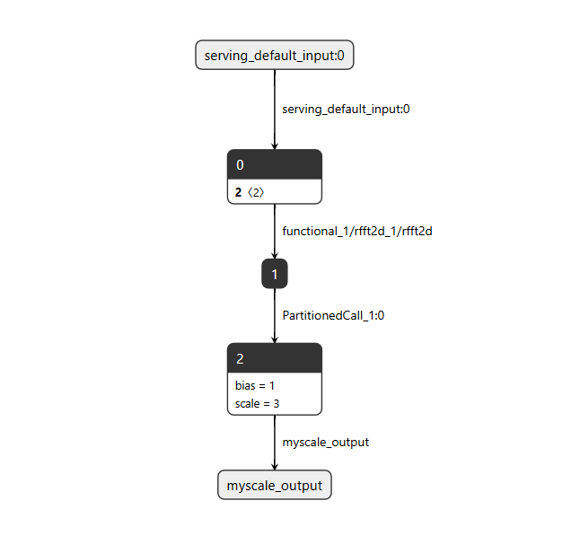

自定义算子部署与调试
本章介绍在EK-RA8P1 上的实现自定义算子的过程。
以 RFFT2D -> COMPLEX_ABS -> MyScale 参考模型，目标是在当前工程中，把模型生成、算子实现、Resolver 注册、模型执行和结果比对串成一条可调试的链路。
RFFT2D 工程项目下载地址： TODO
进入本章前的判断
flowchart TD
A["Vela 将节点留在 CPU"] --> B{"能否调整参数或重写模型？"}
B -- "能" --> C["修改模型并重新量化"]
C --> D["重新运行 Vela"]
B -- "不能" --> E{"TFLM 是否已有 CPU kernel？"}
E -- "有" --> F["注册已有 kernel 并评估性能"]
E -- "没有" --> G["实现或移植 CPU kernel"]
G --> H["注册到 Resolver"]
H --> I["板端结果与 PC 参考值比较"]
F -- "性能满足要求" --> J["结束"]
I -- “精度满足”--> J
flowchart TD
A["Vela 将节点留在 CPU"] --> B{"能否调整参数或重写模型？"}
B -- "能" --> C["修改模型并重新量化"]
C --> D["重新运行 Vela"]
B -- "不能" --> E{"TFLM 是否已有 CPU kernel？"}
E -- "有" --> F["注册已有 kernel 并评估性能"]
E -- "没有" --> G["实现或移植 CPU kernel"]
G --> H["注册到 Resolver"]
H --> I["板端结果与 PC 参考值比较"]
F -- "性能满足要求" --> J["结束"]
I -- “精度满足”--> JCortex M85中的MVE在工程中的应用
Cortex‑M85 在 CMSIS‑DSP 与 CMSIS‑NN 中的作用
RA8P1的CPU0 是 1Ghz的Cortex M85内核，支持MVE(矢量扩展)，Cortex‑M85 利用 Helium/MVE 128 位向量扩展，加速 CMSIS‑DSP 信号处理和 CMSIS‑NN 量化神经网络推理。
| 项目 | CMSIS‑DSP | CMSIS‑NN | Cortex‑M85 的作用 |
|---|---|---|---|
| 定位 | 数字信号处理库 | 神经网络优化算子库 | 提供高性能 MCU 运行平台 |
| 典型功能 | FFT、滤波、矩阵、统计运算 | 卷积、全连接、池化、激活函数 | 加速 DSP 处理与 AI 推理 |
| 主要数据类型 | 浮点、Q7/Q15/Q31 定点 | int8、int16 量化数据 |
支持整数和浮点向量运算 |
| 主要加速技术 | Helium/MVE、FPU、SIMD | Helium/MVE、SIMD、点积运算 | 通过 128 位向量扩展提升并行度 |
| 典型用途 | 音频处理、传感器滤波、特征提取 | 语音识别、图像分类、异常检测 | 实现端侧实时信号处理与 AI |
| 协同方式 | 完成数据预处理和特征提取 | 执行神经网络推理 | 构成“DSP 前处理 + NN 推理”流程 |
| --- | |||
| #### Cortex M85 VS 不带 MVE 的普通 Arm Cortex‑M 内核的优势 |
| 对比项 | Cortex‑M85（带 MVE） | 普通 Cortex‑M（不带 MVE） |
|---|---|---|
| 并行处理 | 128 位向量并行计算 | 以标量或较窄 SIMD 计算为主 |
| DSP 性能 | 可加速 FFT、滤波和矩阵运算 | 通常需要更多指令和周期 |
| AI 推理 | 高效执行 int8/int16 卷积与点积 |
量化网络推理效率较低 |
| CPU 占用 | 相同任务通常耗时更短 | CPU 占用时间相对更长 |
| 能效表现 | 可用更少周期完成计算，能效更高 | 完成同等计算需要更多周期 |
| 应用能力 | 更适合实时音频、视觉和边缘 AI | 更适合控制及中低强度计算 |
优势总结：相比不带 MVE、主要依赖标量或较窄 SIMD 运算的 Cortex‑M 内核，Cortex‑M85 可利用 Helium/MVE 128 位向量扩展同时处理多组整数或浮点数据，从而提升 CMSIS‑DSP 和 CMSIS‑NN 的执行效率。实际提升取决于算法、数据类型、存储器性能、编译器和 CMSIS 版本。
CMSIS-NN 已包含在工程环境中，但当前三个节点没有使用 CMSIS-NN。RFFT2D 通过 CMSIS-DSP 在 Cortex-M85 上执行。
模型介绍
- 模型结构图：

本文中的“自定义算子”包含两种需要工程侧补充实现的情况：
RFFT2D与COMPLEX_ABS是模型中的 builtin 节点；当前工程在rfft2d.cc中提供它们的 kernel 和注册函数。MyScale是模型中的真正CUSTOM节点；模型用customCode="MyScale"标识它，工程以同一字符串注册。
文中当前部署使用 CMSIS-DSP 实现 RFFT2D；rfft2d.cc 以 USE_CMSIS_DSP 选择该路径。
开发环境版本记录
请在开始构建、模型转换或复现问题前填写下表。版本会影响工程生成、模型转换和运行时行为；调试记录应与本表保持一致。
| 项目 | 版本/配置 | 填写说明 |
|---|---|---|
| e2 studio | 2026-04.2 | IDE 版本号。 |
| Renesas FSP | 6.5.1 | FSP 包版本号。 |
| Vela | 4.2.0 | 用于模型转换的 Vela 版本。 |
| Python | 3.10.5 | 运行模型生成脚本的 Python 版本。 |
| TensorFlow | 2.18.0 | 模型构建与转换环境中的 TensorFlow 版本。 |
| TensorFlow Lite | 2.18.0 | Python 环境中 TensorFlow Lite / Interpreter 对应版本。 |
| CMSIS-DSP | 1.16.2 | RFFT2D 使用的 CMSIS-DSP 版本。 |
| CMSIS-NN | 7.0.0 | 当前模型未使用。 |
| Ethos-U Stack | 25.2.0 | 工程使用的 Ethos-U Core Software / Core Driver 软件栈版本。 |
| LLVM | 21.1.1 | 嵌入式代码toolchain版本。 |
| SEGGER J-LINK | 9.42 | 用于下载、调试和 RTT 日志输出的 SEGGER J-Link 软件版本。 |
术语
| 术语 | 本文含义 |
|---|---|
| builtin 节点 | 模型使用固定 builtin opcode 表示的节点；本模型中为 RFFT2D、COMPLEX_ABS。 |
| CUSTOM 节点 | 模型使用 CUSTOM opcode 和字符串标识的节点；本模型中为 MyScale。 |
| Resolver | 将模型节点映射到 TFLMRegistration 的注册表。 |
| Prepare | 张量分配阶段执行的输入、输出类型和 shape 检查。 |
| Eval | 每个节点的实际计算回调，在解释器执行阶段被调用。 |
1. 概述与流程图
1.1 为什么需要本工程的算子实现
模型的三个节点并不能只靠模型文件自动执行：每个节点都必须在 Resolver 中找到对应的 registration。当前工程由 rfft2d.cc 提供 Register_RFFT2D() 和 Register_COMPLEX_ABS()，由 my_scale.cc 提供 Register_MY_SCALE()；随后 get_resolver() 创建 micro_op_resolver，调用 AddRfft2D()、AddComplexAbs() 和 AddCustom("MyScale", Register_MY_SCALE())，将这三个节点的 registration 加入 Resolver。
其中，RFFT2D 和 COMPLEX_ABS 必须按照 builtin opcode 注册；MyScale 则必须使用模型中精确的 custom code "MyScale" 注册。若类型或名称不匹配，问题会在节点查找或 Prepare 阶段出现。
1.2 本指南最终跑通的目标
本指南的最小闭环是：用同一套模型和测试数据，让 RA8P1 上的 TFLM 依次完成 RFFT2D、COMPLEX_ABS、MyScale 三个节点的 Prepare 和 Eval，然后把板端结果与脚本生成的参考输出比较。
当前工程的目标张量关系如下：
flowchart TD
A["input<br/>float32 [1, 16, 32]<br/>512 elements"] --> B["RFFT2D"]
B --> C["rfft output<br/>complex64 [1, 16, 17]"]
C --> D["COMPLEX_ABS"]
D --> E["absolute-value output<br/>float32 [1, 16, 17]<br/>272 elements"]
E --> F["MyScale"]
F --> G["final output<br/>float32 [1, 16, 17]<br/>272 elements"]当前脚本生成的 MyScale 参数为 scale=3.0、bias=1.0，因此最终参考输出为：
板端调试的成功标志不是只看到程序运行，而是同时满足：
- Resolver 的四项注册均成功：
COMPLEX_ABS、RFFT2D、MyScale、EthosU。 - 三个算子的
Prepare均通过，最终输出 tensor 为 272 个float32元素，即 1088 字节。 AllocateTensors()、输入拷贝、解释器执行和输出拷贝均返回成功。- 板端输出可与
test_output_ref比较，并打印最大绝对误差。
1.3 总体流程图
flowchart TD
A["Python: build_rfft_model()<br/>RFFT2D -> COMPLEX_ABS"] --> B["append_myscale()<br/>追加 CUSTOM: MyScale"]
B --> C["model_rfft2d_myscale.tflite"]
B --> D["test_data_for_rfft2d_scale.h<br/>输入与最终参考输出"]
C --> E["Vela cmd.txt<br/>当前三节点均放在 CPU"]
E --> F["model_rfft2d_scale.h<br/>固件内模型数组"]
G["rfft2d.cc<br/>Register_RFFT2D / Register_COMPLEX_ABS"] --> H["工程 Resolver"]
I["my_scale.cc<br/>Register_MY_SCALE"] --> H
H --> J["RFFT2D builtin<br/>COMPLEX_ABS builtin<br/>MyScale custom<br/>EthosU"]
F --> K["MicroInterpreter"]
D --> K
J --> K
K --> L["AllocateTensors -> Invoke"]
L --> M["输出与 test_output_ref 比较"]1.4 自定义算子实现步骤
实现一个自定义算子时，模型侧与 MCU 侧必须使用同一份算子契约：模型定义节点名称、输入输出和参数；MCU 侧实现 Init、Prepare、Eval，再将 registration 加入 Resolver。最后使用同一份输入与参考输出验证完整链路。当前 MyScale 就遵循这一流程。
flowchart TD
A["定义模型节点<br/>输入、输出、customCode、参数"] --> B["生成 .tflite 与参考数据"]
B --> C["实现 MCU kernel<br/>Init -> Prepare -> Eval"]
C --> D["实现 Register_XXX()"]
D --> E["Resolver: AddCustom(名称, Register_XXX())"]
E --> F["编译并链接算子源文件"]
F --> G["AllocateTensors -> Invoke"]
G --> H["与 test_output_ref 比较"]其中 AddCustom() 的名称必须与模型 customCode 完全一致；Prepare() 必须确认 tensor 类型和 shape，Eval() 才执行实际计算。若算子使用 CMSIS-DSP 或 CMSIS-NN，库调用位于 Eval() 内部，不会改变该注册与验证步骤。
1.5 当前参考工程事实摘要
| 模块 | 当前工程中的事实 |
|---|---|
| 模型 | model_rfft2d_myscale.tflite 由 generate_model_rftt2d_myscale.py 生成，节点顺序为 RFFT2D -> COMPLEX_ABS -> MyScale。 |
| 输入与输出 | 输入为 float32 [1,16,32]；最终输出为 float32 [1,16,17]。测试数据文件定义输入 512 个 float、输出 272 个 float。 |
| RFFT2D | rfft2d.cc 要求两个输入、一个输出；其输出类型为 complex64，最后一维为 W/2+1。 |
| COMPLEX_ABS | 实现位于 rfft2d.cc，读取交错的 real, imag float，并计算 \(\sqrt{real^2+imag^2}\)。 |
| MyScale | my_scale.cc 的计算为 \(out=in\times scale+bias\)；Init() 从 FlexBuffer 读取 scale 和 bias。 |
| Resolver | kNumberOperators = 4；当前注册 AddComplexAbs()、AddRfft2D()、AddCustom("MyScale", ...) 和 AddEthosU()，并打印每项注册状态。 |
| 调试代码 | inference.cpp 可打印模型节点、输入/输出 sample 与最大绝对误差；运行流程会报告 AllocateTensors()、拷贝及 Invoke() 状态。 |
| Vela 结果 | cmd.txt 和模型头文件的注释均表明：RFFT2D、COMPLEX_ABS、MyScale 当前放在 CPU，汇总为 3 个 CPU operators、0 个 NPU operators。 |
| CMSIS-DSP RFFT2D | 当前部署通过 USE_CMSIS_DSP 选择 CmsisRfft2d()；该实现逐行调用 CMSIS-DSP RFFT、逐列调用 CFFT，替代仅用于小尺寸调试的朴素 DFT。 |
2. 模型概览与数据流
2.1 模型结构与节点职责
本工程模型由 generate_model_rftt2d_myscale.py 生成，最终模型文件为 model_rfft2d_myscale.tflite。脚本先创建 RFFT2D -> COMPLEX_ABS 的 base 模型，再追加 MyScale 作为最终输出节点。
模型数据流是：
float32 [1, 16, 32]
|
v
RFFT2D (builtin)
|
v
complex64 [1, 16, 17]
|
v
COMPLEX_ABS (builtin)
|
v
float32 [1, 16, 17]
|
v
MyScale (CUSTOM)
|
v
float32 [1, 16, 17]
RFFT2D 与 COMPLEX_ABS 是 builtin 节点；MyScale 是 CUSTOM 节点，模型写入的 customCode 为精确字符串 "MyScale"。当前 MyScale 参数为 \(scale=3.0\)、\(bias=1.0\)，并通过 FlexBuffer customOptions 保存。
2.2 模型生成与 MyScale 节点追加
build_rfft_model() 先建立 base 模型：
inp = tf.keras.Input(shape=(height, width), name="input", dtype=tf.float32)
x = tf.keras.layers.Lambda(lambda y: tf.signal.rfft2d(y), name="rfft2d")(inp)
x = tf.keras.layers.Lambda(lambda y: tf.abs(y), name="complex_abs")(x)
return tf.keras.Model(inp, x)
随后 append_myscale() 取得 base 模型的原输出张量 old_out，新增同 shape 的 float32 张量作为 MyScale 输出，并将子图输出更新为新张量。
old_out = sg.outputs[0]
out_shape = list(sg.tensors[old_out].shape)
t = schema_fb.TensorT()
t.shape = out_shape
t.type = schema_fb.TensorType.FLOAT32
t.buffer = 0
t.name = "myscale_output"
sg.tensors.append(t)
new_out = len(sg.tensors) - 1
op.inputs = [int(old_out)]
op.outputs = [int(new_out)]
sg.operators.append(op)
sg.outputs = [int(new_out)]
MyScale 是逐元素运算，不改变 shape；更新 sg.outputs 能保证部署模型输出来自 MyScale，而不是中间的幅值张量。可通过脚本的 inspect_combined_model() 验证节点顺序和 custom_code='MyScale'。
2.3 输入、输出与张量映射
脚本定义 CMSIS_RFFT2D_HEIGHT = 16、CMSIS_RFFT2D_WIDTH = 32。输入共有 \(1\times16\times32=512\) 个元素；RFFT2D 的输出宽度为 \(W/2+1=17\)，后续两个节点均保持 [1,16,17]，共有 \(1\times16\times17=272\) 个实数元素。
| 阶段 | 张量类型 | shape | 元素布局/计算 |
|---|---|---|---|
| 输入 | float32 |
[1,16,32] |
512 个实数。 |
| RFFT2D 输出 | complex64 |
[1,16,17] |
每个复数由相邻两个 float 保存：real, imag。 |
| COMPLEX_ABS 输出 | float32 |
[1,16,17] |
每个元素为 \(\sqrt{real^2+imag^2}\)。 |
| MyScale 输出 | float32 |
[1,16,17] |
每个元素为 \(input\times scale+bias\)。 |
Vela 输出表明这三个节点当前均放在 CPU：CPU operators = 3 (100.0%)、NPU operators = 0 (0.0%)。因此，初次调试应先验证 CPU kernel、Resolver 和参考输出，不应假设三个节点由 Ethos-U55 执行。
名称不要混淆： Vela 警告中的 CUSTOM 'myscale_output' 对应脚本为新输出 tensor 设置的 t.name = "myscale_output"；它不是 CUSTOM 节点的 customCode。Resolver 的匹配键仍是 oc.customCode = "MyScale"，因此必须使用 AddCustom("MyScale", Register_MY_SCALE())，不能用 "myscale_output"。
3. 核心实现代码参考列表
| 文件 | 说明 |
|---|---|
src/my_scale.cc |
MyScaleParams；kInputTensor、kOutputTensor；Init()、Prepare()、Eval()、SetOutputDimsFromInput()、Register_MY_SCALE()；FlexBuffer 键 scale、bias；MyScale Prepare... 日志。 |
src/rfft2d.cc |
kInputTensor、kFftLengthTensor、kOutputTensor；Prepare()、Eval()、NaiveRfft2d()、可选的 CmsisRfft2d()、SetTensorDims()、IsPowerOfTwo()、Register_RFFT2D()、Register_COMPLEX_ABS()；USE_CMSIS_DSP 条件编译；三个 Prepare 日志。 |
src/complex_abs.h |
Register_COMPLEX_ABS() 的声明。当前允许范围内未发现独立的 complex_abs.c 或 complex_abs.cc；其注册和执行实现位于 rfft2d.cc。 |
src/py/generate_model_rftt2d_myscale.py |
模型构建、append_myscale()、inspect_model()、inspect_combined_model()、run_inference()、generate_all()；CMSIS_RFFT2D_HEIGHT=16、CMSIS_RFFT2D_WIDTH=32、MYSCALE_SCALE=3.0、MYSCALE_BIAS=1.0；模型节点及张量连接。文件名实际为 rftt2d，与任务中所写名称不同。 |
src/py/model_rfft2d_myscale.tflite |
最终部署模型二进制；由 COMBINED_TFLITE_PATH 指向。其节点结构由 schema 检查函数输出。 |
src/py/vela_convert/cmd.txt |
Vela 转换命令；RFFT2D、COMPLEX_ABS、CUSTOM 'myscale_output' 的 CPU 放置警告；CPU operators = 3、NPU operators = 0。 |
3.1 模型节点索引
| 节点 | 模型类别 | 输入 | 输出 | 参数或注册标识 |
|---|---|---|---|---|
RFFT2D |
builtin | float32 [1,16,32] 与 int32 FFT 长度张量 |
complex64 [1,16,17] |
BuiltinOperator_RFFT2D，Register_RFFT2D() |
COMPLEX_ABS |
builtin | complex64 [1,16,17] |
float32 [1,16,17] |
BuiltinOperator_COMPLEX_ABS，Register_COMPLEX_ABS() |
MyScale |
CUSTOM |
float32 [1,16,17] |
float32 [1,16,17] |
customCode="MyScale"，FlexBuffer scale/bias，Register_MY_SCALE() |
4. 基本概念：builtin、未移植 builtin 与 custom
4.1 三种情况
- 模型 builtin 节点：模型以固定 builtin opcode 表示的节点。本模型的
RFFT2D和COMPLEX_ABS属于这一类。 - 工程中需要补充 kernel 的 builtin：即使模型节点是 builtin，工程仍必须提供与其 opcode 对应的 registration 和执行代码。
rfft2d.cc为两个节点提供了 registration、Prepare和Eval。 - 真正的 custom 节点：模型 opcode 为
CUSTOM，并包含字符串customCode。append_myscale()追加的MyScale正是该情况。
关键区别：
// builtin 节点按 builtin opcode 匹配。
AddBuiltin(BuiltinOperator_RFFT2D, Register_RFFT2D(), ParseNoBuiltinOptions);
// custom 节点按 customCode 字符串匹配。
AddCustom("MyScale", Register_MY_SCALE());
上面的注册形式来自工程内参考。对本模型而言，AddCustom("RFFT2D", ...) 不能替代 builtin 注册，因为脚本没有把 RFFT2D 改写成 CUSTOM；它只为 MyScale 新建了 CUSTOM opcode。
4.2 为什么 builtin 节点仍要自己实现 kernel
builtin 只说明模型声明“这里需要执行某个标准算子”，例如 RFFT2D；它不保证 MCU 工程已经有这段算子的执行代码。需要区分三个对象：模型负责声明需要什么算子，TFLM 工程负责提供 kernel 并通过 Resolver 找到它，RA8P1 固件负责把这些工程代码编译、链接后运行在芯片上。
因此，如果 builtin 节点无法执行，应检查当前 TFLM 工程是否包含对应 kernel，以及该 kernel 是否已加入 Resolver；不应将问题理解为“RA8P1 硬件不支持 builtin 算子”。要让一个 builtin 节点在当前 TFLM 工程中运行，以下三层必须同时存在：
| 层次 | RFFT2D / COMPLEX_ABS 在当前工程中的含义 |
缺失时的结果 |
|---|---|---|
| 模型标识 | .tflite 将节点标记为 builtin RFFT2D 或 COMPLEX_ABS。 |
运行时不知道模型需要什么运算。 |
| Resolver 映射 | TFLM Resolver 用 AddBuiltin(BuiltinOperator_..., Register_..., ...) 将 builtin opcode 关联到 registration。 |
TFLM 解释器无法由模型 opcode 找到实现。 |
| Kernel 实现 | TFLM registration 提供 Prepare 和 Eval；前者检查并设置 tensor，后者执行 FFT 或复数幅值计算。 |
即使找到 opcode，也没有可执行代码完成计算。 |
因此，本工程需要“自己实现”的是当前 TFLM 构建所需的第三层 kernel，并在第二层把它加入 Resolver；不是因为 RA8P1 要求把 RFFT2D 或 COMPLEX_ABS 改写为 CUSTOM 节点。rfft2d.cc 中的两个 registration 就是具体证据：
TFLMRegistration* Register_RFFT2D() {
static TFLMRegistration r =
tflite::micro::RegisterOp(/*init=*/nullptr, Prepare, Eval);
return &r;
}
TFLMRegistration* Register_COMPLEX_ABS() {
static TFLMRegistration r =
tflite::micro::RegisterOp(/*init=*/nullptr, /*prepare=*/..., /*eval=*/...);
return &r;
}
Register_RFFT2D() 使用的 Prepare 会检查两个输入、一个输出、类型和 FFT shape；当前部署的 Eval 调用 CmsisRfft2d()，未启用 USE_CMSIS_DSP 时才回退到 NaiveRfft2d()。Register_COMPLEX_ABS() 的 Prepare 检查 complex64 -> float32，其 Eval 对每个复数计算幅值。这些都是 builtin opcode 自身不携带、必须由当前 TFLM 构建链接的代码提供的执行行为。
可以把三类节点理解为下表：
| 节点 | 模型中的身份 | 工程为什么仍需代码 | 正确注册键 |
|---|---|---|---|
RFFT2D |
builtin | 当前工程需要提供 FFT 的 Prepare 和 Eval。 |
BuiltinOperator_RFFT2D |
COMPLEX_ABS |
builtin | 当前工程需要提供复数幅值的 Prepare 和 Eval。 |
BuiltinOperator_COMPLEX_ABS |
MyScale |
CUSTOM |
模型没有 builtin opcode 可映射，工程需提供 kernel，并按模型写入的名称查找。 | "MyScale" |
如何验证： 若 builtin 节点没有正确加入 Resolver，问题会发生在 AllocateTensors() 前后的节点查找阶段；若注册成功但 Prepare 的类型或 shape 检查失败，日志会显示 RFFT2D Prepare failed... 或 COMPLEX_ABS Prepare failed...。当两个 builtin kernel 都执行成功后，数据才会流入 MyScale。
4.3 如何确认模型节点
执行生成脚本中的 inspect_combined_model() 会直接使用 schema 遍历 sg.Operators()：builtin 节点打印 builtin 名称，CUSTOM 节点打印 custom_code。
预期的逻辑顺序为：
node[0] BUILTIN RFFT2D
node[1] BUILTIN COMPLEX_ABS
node[2] CUSTOM custom_code='MyScale'
这里最关键的验证点是最后一行的字符串必须为 MyScale，且大小写一致。脚本中写入该字符串的位置是：
oc.builtinCode = schema_fb.BuiltinOperator.CUSTOM
oc.deprecatedBuiltinCode = schema_fb.BuiltinOperator.CUSTOM
oc.customCode = "MyScale"
这也是 MCU 侧 AddCustom() 必须使用 "MyScale" 的原因。
5. 各算子的设计目的与实现
5.1 Cortex-M85 上的 CMSIS 优化路径
RA8P1 使用 Cortex-M85 内核。除直接编写 C/C++ 循环外，自定义算子的 Eval() 还可以根据运算类型考虑调用 CMSIS 库完成实现或优化。
| 库 | 适合的自定义算子类型 | 当前工程状态 |
|---|---|---|
| CMSIS-DSP | FFT、滤波、向量数学、复数或其他信号处理运算。 | 当前 RFFT2D 通过 USE_CMSIS_DSP 使用 CmsisRfft2d()：逐行调用 CMSIS-DSP RFFT，逐列调用 CFFT。该实现替代 NaiveRfft2d() 的朴素 DFT，当前工程确认其速度快很多。 |
| CMSIS-NN | 量化神经网络类运算，例如卷积、全连接、激活或池化等可映射的计算。 | 工程目录包含 CMSIS-NN；当前 rfft2d.cc 和 my_scale.cc 没有调用 CMSIS-NN API，因此 RFFT2D、COMPLEX_ABS、MyScale 当前并非 CMSIS-NN 实现。 |
CMSIS-DSP 与 CMSIS-NN 都只改变 kernel 的内部实现；它们不改变模型节点类型、Register_*() 接口、Resolver 注册方式或张量契约。无论使用手写循环还是 CMSIS 库，仍必须让 Prepare() 验证类型/shape，并让 Eval() 按模型约定读写 tensor。
当前模型的选择： RFFT2D 属于信号处理计算，当前工程已经使用 CMSIS-DSP 实现；MyScale 是简单的逐元素浮点计算，当前直接使用循环实现。这里的 CMSIS-DSP 仍在 Cortex-M85 CPU 上运行，并不表示 RFFT2D 被 Ethos-U 执行；性能比较对象是 NaiveRfft2d() 的朴素 DFT 循环。若未来新增量化神经网络类 custom kernel，可评估 CMSIS-NN，但需要先确认输入/输出数据类型、量化参数、所选 API 的约束和构建链接配置。
5.2 RFFT2D：将二维实数输入转换为二维复数频谱
RFFT2D 的 Prepare() 要求：两个输入、一个输出；第一个输入为 float32，第二个 FFT 长度输入为 int32，输出为 complex64。输入 rank 至少为 2，最后两个维度 H、W 必须是 2 的幂。
数学定义
对一个二维实数输入 \(x[h,w]\)，本工程的 NaiveRfft2d() 为每一个输出频率坐标 \((u,v)\) 计算二维离散傅里叶变换：
其中，\(h\)、\(w\) 是输入空间坐标，\(u\)、\(v\) 是频率坐标，\(H\) 和 \(W\) 分别是输入最后两维的高度和宽度。因为输入是实数，当前实现仅计算宽度方向的非冗余频率：
将复指数展开后，输出复数 \(X[u,v]=R[u,v]+jI[u,v]\) 的实部和虚部分别为：
这与源码的四重循环一一对应：u、v 遍历输出频率；h、w 累加所有输入点；计算结果以相邻的两个 float 保存为 real, imag。当前模型 \(H=16\)、\(W=32\)，故每个 batch 输出 \(16\times(32/2+1)=272\) 个复数频率点，张量 shape 为 [1,16,17]。
与源码的对应关系
float angle = -2.f * my_PI *
((float)u * h / H + (float)v * w / W);
real += x * cosf(angle);
imag += x * sinf(angle);
out_complex[(u * Wc + v) * 2 + 0] = real;
out_complex[(u * Wc + v) * 2 + 1] = imag;
这里的 Wc 是 \(W/2+1\)；乘以 2 是因为一个 complex64 在此实现中由两个连续的 float 表示。随后 COMPLEX_ABS 对每个 \((R,I)\) 计算 \(\sqrt{R^2+I^2}\)，将复数频谱转换为实数幅值。
关键代码：
if (input->type != kTfLiteFloat32) { ... }
if (fft_length->type != kTfLiteInt32) { ... }
if (output->type != kTfLiteComplex64) { ... }
const int H = input->dims->data[rank - 2];
const int W = input->dims->data[rank - 1];
if (!IsPowerOfTwo(H) || !IsPowerOfTwo(W)) { ... }
output_dims[rank - 2] = H;
output_dims[rank - 1] = W / 2 + 1;
为什么这样设计： 输出 shape 与输入的前导维度和高度相同，最后一维按 W / 2 + 1 缩减；类型和维度在执行前被拒绝，可避免 Eval() 按错误的数据布局访问内存。
Eval() 计算除最后两维以外的 batch 数，并按 batch 调用实现：
const int in_stride = H * W;
const int out_stride = H * (W / 2 + 1) * 2;
for (int b = 0; b < batch; ++b) {
const float* in_b = in_data + b * in_stride;
float* out_b = out_data + b * out_stride;
#ifdef USE_CMSIS_DSP
TfLiteStatus st = CmsisRfft2d(context, in_b, out_b, H, W, scratch, col_buf);
if (st != kTfLiteOk) return st;
#else
NaiveRfft2d(in_b, out_b, H, W);
#endif
}
当前部署定义 USE_CMSIS_DSP 并使用 CmsisRfft2d()；后者先逐行 RFFT，再逐列 CFFT，并使用静态 scratch 与 col_buf。未定义该宏时，代码才回退到 NaiveRfft2d()。朴素路径的复杂度为 \(O((H\times W)^2)\)，源码明确仅将它用于小尺寸调试；当前 CMSIS-DSP 路径相较该朴素 DFT 实现快很多。
验证方法： 观察 RFFT2D Prepare ok: H=16 W=32 Wc=17 ... 日志；若出现 must be power of 2，先检查模型输入 shape，而非先修改 Eval()。
5.3 COMPLEX_ABS：将复数频谱变为实数幅值
Register_COMPLEX_ABS() 创建的 registration 内含 Prepare 和执行 Lambda。Prepare 要求一个 complex64 输入、一个 float32 输出，并复制输入 shape 到输出。
关键执行代码：
for (int i = 0; i < output_count; ++i) {
const float real = input_data[2 * i + 0];
const float imag = input_data[2 * i + 1];
output_data[i] = sqrtf(real * real + imag * imag);
}
为什么这样设计： RFFT2D 以交错 real, imag 浮点数保存每个 complex64，而幅值输出为每个复数对应的一个浮点数。因此输入索引步长为 2，输出 shape 保持 [1,16,17]。
验证方法： 在日志中确认 COMPLEX_ABS Prepare ok: elements=272 bytes=1088。若报 input type 或 output type，先核对上游 RFFT2D 输出和模型文件，而非改变幅值公式。
5.4 MyScale：示范完整的 CUSTOM 算子
MyScale 是本工程专门追加的 custom 节点，用于执行：
它的输入和输出均为 float32，shape 完全相同。
Init()
struct MyScaleParams {
float scale;
float bias;
};
void* Init(TfLiteContext* context, const char* buffer, size_t length) {
MyScaleParams* params = static_cast<MyScaleParams*>(
context->AllocatePersistentBuffer(context, sizeof(MyScaleParams)));
params->scale = 1.0f;
params->bias = 0.0f;
if (buffer != nullptr && length > 0) {
flexbuffers::Map map = flexbuffers::GetRoot(
reinterpret_cast<const uint8_t*>(buffer), length).AsMap();
params->scale = map["scale"].AsFloat();
params->bias = map["bias"].AsFloat();
}
return params;
}
作用： 为节点持久化分配 MyScaleParams，初始化默认参数，并在模型提供 custom_options 时解析 scale、bias。
为什么这样设计： 模型生成脚本也以 scale、bias 作为 FlexBuffer map 键；两端键名一致，Eval() 可以通过 node->user_data 取到模型参数。
验证方法： 先确认脚本中的：
with fbb.Map():
fbb.Float("scale", scale)
fbb.Float("bias", bias)
再确认 C++ 中键名相同。当前脚本常量为 3.0 和 1.0，其生成的参考输出也采用相同计算。
Prepare()
TF_LITE_ENSURE_EQ(context, NumInputs(node), 1);
TF_LITE_ENSURE_EQ(context, NumOutputs(node), 1);
if (input->type != kTfLiteFloat32 || output->type != kTfLiteFloat32) {
return kTfLiteError;
}
TfLiteStatus status = SetOutputDimsFromInput(
context, input, output,
tflite::micro::GetEvalOutput(context, node, kOutputTensor));
SetOutputDimsFromInput() 分配持久化维度数组，逐维复制 input shape，并按 float 元素数量更新 output->bytes。
为什么这样设计： MyScale 是逐元素变换，不改变 rank、每维长度或元素类型。提前设置 shape 和字节数，保证 Eval() 能以同一扁平元素数读写。
验证方法： 日志应包含：
MyScale Prepare: inputs=1 outputs=1
MyScale Prepare input dims: 1 16 17
MyScale Prepare ok: elements=272 bytes=1088
若不是该结果，应先检查上游 COMPLEX_ABS 输出和模型生成脚本输出张量，而不是只检查 scale 或 bias。
Invoke()/Eval()
在该工程 registration 中，第三个函数名为 Eval；它是在解释器执行阶段调用的回调，也就是本文所称的 Invoke 阶段算子执行函数。
const MyScaleParams* params =
static_cast<const MyScaleParams*>(node->user_data);
const float* in = tflite::micro::GetTensorData<float>(input);
float* out = tflite::micro::GetTensorData<float>(output);
const int n = tflite::micro::GetTensorShape(input).FlatSize();
for (int i = 0; i < n; ++i) {
out[i] = in[i] * params->scale + params->bias;
}
为什么这样设计： Prepare() 已保证输入、输出类型和 shape 一致，因此该循环使用 input 的 FlatSize()，每个元素恰写入一次输出。
验证方法： 脚本的 PC 参考值使用完全同一表达式：
abs_out = run_inference(BASE_TFLITE_PATH, model_input)
ref_output = abs_out * MYSCALE_SCALE + MYSCALE_BIAS
将板端最终输出与 test_output_ref 对比时，若 RFFT2D 和 COMPLEX_ABS 已正确，最终差异应能直接暴露 MyScale 参数解析或逐元素计算问题。
6. 注册与 Resolver 集成
6.1 注册接口
三个 registration 函数如下：
TFLMRegistration* Register_RFFT2D();
TFLMRegistration* Register_COMPLEX_ABS();
TFLMRegistration* Register_MY_SCALE();
前两个定义于 rfft2d.cc，COMPLEX_ABS 的声明位于 complex_abs.h；MyScale 定义于 my_scale.cc。
其共同模式是用 tflite::micro::RegisterOp(...) 生成静态 TFLMRegistration。其中 RFFT2D 和 COMPLEX_ABS 的 init 为 nullptr，MyScale 需要 Init 解析自定义参数。
6.2 Resolver 配置
工程内参考给出的配置原则是：
// 两个模型 builtin 节点：按 builtin opcode 注册。
AddBuiltin(BuiltinOperator_RFFT2D,
Register_RFFT2D(),
ParseNoBuiltinOptions);
AddBuiltin(BuiltinOperator_COMPLEX_ABS,
Register_COMPLEX_ABS(),
ParseNoBuiltinOptions);
// 一个模型 CUSTOM 节点：按 customCode 注册。
AddCustom("MyScale", Register_MY_SCALE());
ParseNoBuiltinOptions 将 builtin_data 设为 nullptr，适用于文档中说明的 RFFT2D、COMPLEX_ABS 无 builtin options 的配置。
AddEthosU() 在当前模型中的作用
当前工程的 get_resolver() 还调用了：
TfLiteStatus ethosu_status = micro_op_resolver.AddEthosU();
因此当前 kNumberOperators 为 4，分别容纳 COMPLEX_ABS、RFFT2D、MyScale 和 EthosU 四项 Resolver registration。该调用是当前推理框架保留的 Ethos-U registration；它本身不会把 CPU 节点变成 NPU 节点，也不会改变模型中的算子顺序。
对当前 model_rfft2d_myscale.tflite 而言，Vela 结果明确为 3 个 CPU operators、0 个 NPU operators；RFFT2D、COMPLEX_ABS 和 MyScale 都已被放在 CPU。因此，当前模型实际执行所必需的是前三项 registration，AddEthosU() 不是让这三个节点成功执行的必要条件。
如果后续替换为包含 Ethos-U 相关节点的模型，则应保留 AddEthosU()，并按实际注册数量调整 kNumberOperators。在没有确认新模型节点之前，不应仅因为工程保留了 AddEthosU() 就推断当前模型会使用 NPU。
必须满足的四项检查：
- Resolver 容量至少覆盖实际添加的 registration 数量。当前模型有 3 个 CPU 节点，但工程还保留
AddEthosU()，所以当前kNumberOperators = 4。 RFFT2D使用 builtin 注册，而不是AddCustom("RFFT2D", ...)。COMPLEX_ABS使用 builtin 注册。AddCustom的字符串为精确的"MyScale"，与脚本的customCode逐字符一致。
6.3 模型中的调用方式
运行时的顺序可概括为：
读取 model_rfft2d_myscale.tflite
-> 根据节点 opcode 查询 Resolver
-> 为 RFFT2D/COMPLEX_ABS 取得 builtin registration
-> 为 MyScale 以 "MyScale" 取得 custom registration
-> Prepare 分配或确认各输出 tensor
-> 执行 RFFT2D Eval
-> 执行 COMPLEX_ABS Eval
-> 执行 MyScale Eval
这个顺序由模型脚本中创建并追加节点的次序，以及每个 registration 的 Prepare/Eval 实现共同确定。
7. RA8P1 部署步骤
7.1 生成模型和参考数据
在 src/py 目录运行实际存在的脚本文件：
python .\generate_model_rftt2d_myscale.py
脚本会：构建 base 模型、追加 MyScale、写入 model_rfft2d_myscale.tflite、检查节点、运行 base 模型得到 abs_out、按 MyScale 参数生成 ref_output，并写出测试数据头文件。
检查以下输出是否一致：
- 输入 shape 为
[1,16,32]； - base 模型
COMPLEX_ABS输出 shape 为[1,16,17]； - combined 模型包含
CUSTOM custom_code='MyScale'； - 最终参考输出为
abs_out * 3.0 + 1.0。
7.2 执行 Vela 命令并正确解读结果
工程保存的命令为：
vela ..\model_rfft2d_myscale.tflite --accelerator-config=ethos-u55-256 --optimise Performance --config ra8p1_vela420.ini --system-config=RA8P1 --memory-mode=Sram_Only --output-dir out_0
该命令的既有输出已明确指出三个节点均放在 CPU，且它们缺少量化参数。该结果不是 RFFT2D、COMPLEX_ABS 或 MyScale kernel 计算失败的直接证据；它说明当前模型的这些节点没有被 Vela 放到 NPU。
其中 Vela 的 CUSTOM 'myscale_output' 仅使用 MyScale 输出 tensor 名描述该节点；它不改变模型写入的 customCode="MyScale"。板端 Resolver 仍按 MyScale 注册，不应将 Vela 日志中的 myscale_output 传给 AddCustom()。
因此，初次联调的顺序应是：先确认 Resolver、Prepare、CPU Eval 和参考输出，再单独讨论是否要调整模型以改变 Vela 的放置结果。后一项不在本指南的事实范围内。
7.3 确认算子源文件参与构建
部署时应确认 my_scale.cc 与 rfft2d.cc 被工程编译并链接。否则即使 Resolver 源码写对，Register_MY_SCALE()、Register_RFFT2D() 或 Register_COMPLEX_ABS() 也可能无法被链接到固件。
这是由函数定义所在源文件直接推导出的构建要求；可以用工程构建日志或目标文件列表检查它们是否参与编译。
8. 分阶段调试方法
8.1 第 1 阶段：先检查模型，而非板端
运行 generate_model_rftt2d_myscale.py 中的两个检查函数：
inspect_model(BASE_TFLITE_PATH)
inspect_combined_model(COMBINED_TFLITE_PATH)
检查点：
| 检查项 | 正确预期 | 异常时优先排查 |
|---|---|---|
| base 输入 | float32 [1,16,32] |
CMSIS_RFFT2D_HEIGHT/WIDTH 或模型生成过程。 |
| base 输出 | [1,16,17] |
RFFT2D 的最后一维推导。 |
| custom 名称 | MyScale |
oc.customCode 与 Resolver 字符串。 |
| MyScale 输入输出 | 追加节点输入是原输出、输出是新 tensor | old_out、new_out、sg.outputs。 |
这些检查没有目标板依赖，能最快排除“模型文件和 MCU 代码不匹配”。
8.2 第 2 阶段：Resolver 查询失败
根据工程内参考，若 builtin registration 不存在，会在张量分配前出现找不到 builtin op 的问题；若 custom registration 不存在或名称不一致，则会出现 custom op 匹配失败。
排查顺序：
- 确认模型中节点类型：
RFFT2D/COMPLEX_ABS为 builtin，MyScale为 custom。 - 确认前两个节点用
AddBuiltin，MyScale 用AddCustom("MyScale", ...)。 - 逐字核对
MyScale的大小写；不要用输出 tensor 名myscale_output代替 custom code。 - 检查三个
Register_*()的声明可见且定义所在源文件被链接。
8.3 第 3 阶段：Prepare 失败
Prepare() 已提供足够的 printf 日志，应先读取具体失败类别：
| 日志前缀 | 直接含义 | 下一步 |
|---|---|---|
RFFT2D Prepare failed: inputs= |
节点输入数不等于 2 | 检查模型的 RFFT2D 节点及 FFT 长度张量。 |
RFFT2D Prepare failed: ... type= |
输入、长度或输出类型不符合 | 对照第 2.3 节的类型表。 |
RFFT2D Prepare failed: H=... W=... must be power of 2 |
最后两维未通过 2 的幂检查 | 对照脚本中的 16、32 常量。 |
COMPLEX_ABS Prepare failed: ... type= |
复数输入或 float 输出不符 | 检查 RFFT2D 输出类型和模型链。 |
MyScale Prepare failed: unsupported output type= |
输出不是 float32 |
检查 append_myscale() 新 tensor 类型。 |
8.4 第 4 阶段：Invoke 后数值不正确
把问题按数据流切为三段：
输入 -> RFFT2D -> 复数频谱 -> COMPLEX_ABS -> 幅值 -> MyScale -> 最终输出
建议使用相同输入，依次比较：
- 脚本的
abs_out：这是 base 模型的 RFFT2D + COMPLEX_ABS 参考值。 - 脚本的
ref_output：这是abs_out * MYSCALE_SCALE + MYSCALE_BIAS的最终参考值。 - 板端 MyScale 输出：若它与幅值之间不满足 \(y=x\times3+1\)，检查 FlexBuffer 解析和
node->user_data。 - 板端幅值：若最终差异在 MyScale 之前已出现，检查复数布局是否始终采用
real, imag交错存储，以及sqrtf的索引是否按两个 float 取一个复数。 - 板端 RFFT2D：当前部署应运行 CMSIS-DSP 路径。
inference.cpp在USE_CMSIS_DSP生效时打印Using CMSIS-DSP FFT implementation；若该日志缺失，检查重新构建时该宏是否仍生效，避免意外回退到朴素 DFT 路径。
8.5 第 5 阶段：确认 CPU/NPU 期望
若看到 Vela 中关于 RFFT2D、COMPLEX_ABS 或 CUSTOM 'myscale_output' 的 CPU 放置警告，不要把它解释为“MCU 不会执行该节点”。当前工程源码为这三段计算提供 CPU kernel，Vela 结果也明确汇总为 3 个 CPU operator、0 个 NPU operator。
当前模型的正确验收首先是：三个节点均被 Resolver 找到、三个 Prepare 成功、最终输出与脚本参考值一致。是否将某些节点部署到 NPU 是独立问题。
9. 最小验收清单
完成一次完整部署前，逐项确认：
- [ ] 运行的是
src/py/generate_model_rftt2d_myscale.py，并生成model_rfft2d_myscale.tflite。 - [ ] combined 模型节点顺序为
RFFT2D -> COMPLEX_ABS -> MyScale。 - [ ] 输入为
[1,16,32]，三个阶段的输出 shape 依次为[1,16,17]复数、[1,16,17]float、[1,16,17]float。 - [ ] MyScale 的
customCode和 Resolver 字符串都是精确的MyScale。 - [ ] RFFT2D 和 COMPLEX_ABS 走 builtin 注册，MyScale 走
AddCustom注册。 - [ ] 日志显示三个
Prepare成功，其中 MyScale 为 272 个元素、1088 字节。 - [ ] 最终输出与脚本生成的
ref_output对比；MyScale 参考表达式为 \(|RFFT2D(input)|\times3+1\)。 - [ ] Vela 的
CPU operators = 3、NPU operators = 0被当作当前模型放置结果，而不是遗漏的错误信息。
完成上述闭环后，进入性能调优评估模型重写、CMSIS 优化或其他实现方案。